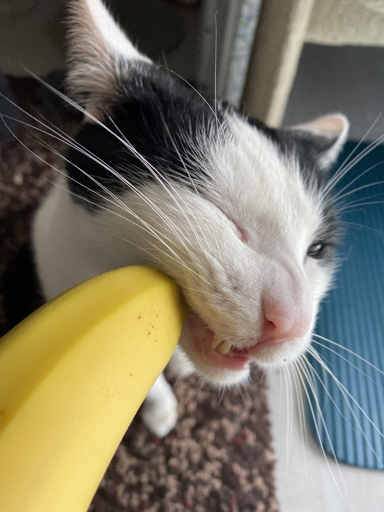

I am a first-year PhD candidate in the Department of Cognitive Robotics (CoR) at Delft University of Technology, supervised by Prof. Javier Alonso-Mora and Prof. Laura Ferranti. My research targets real-world robotic applications. I am particularly interested in developing algorithms that enable robots to learn and adapt in complex, dynamic environments, with a focus on multi-agent systems and real-time decision-making.
Publications and preprints
Papers sorted by recency. Representative papers are highlighted.
Andrei-Carlo Papuc, Lasse Peters, Sihao Sun, Laura Ferranti, Javier Alonso-Mora
arXiv preprint, 2026
video / arXiv / code / bibtex
Misc
I have a goofy cat named Cow (pictured below). In my free time, I enjoy going out for a Guinness, bouldering, and playing around with Processing and TouchDesigner.
